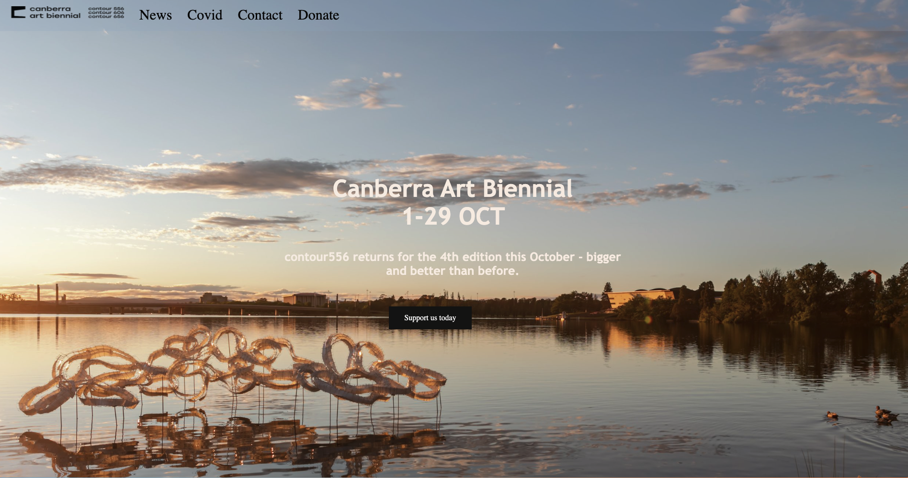
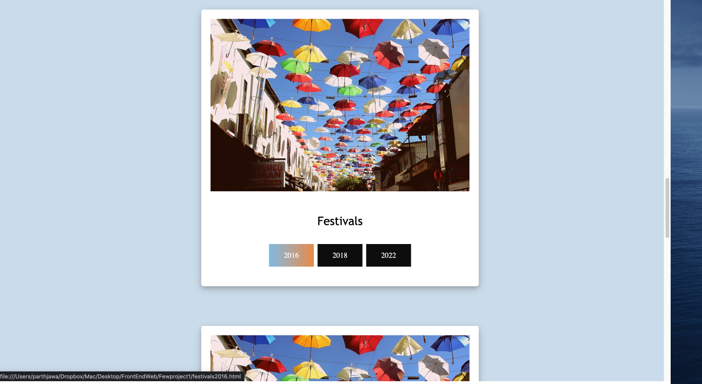
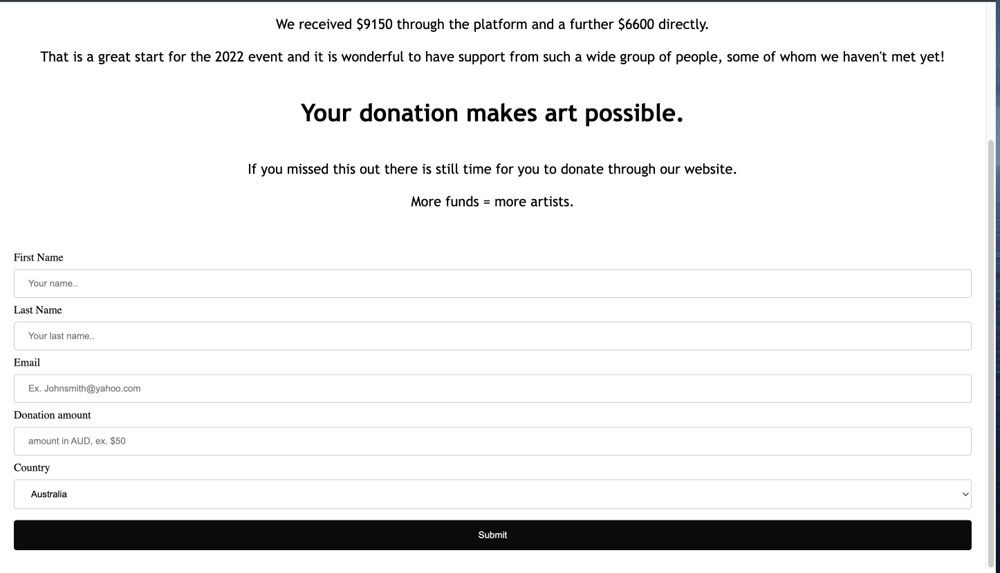
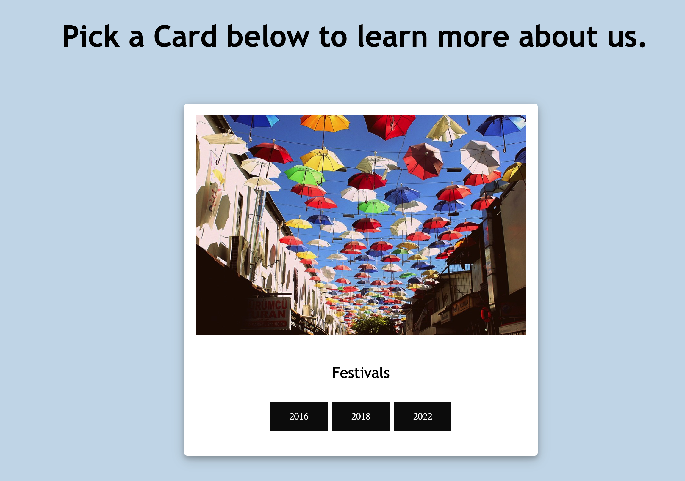
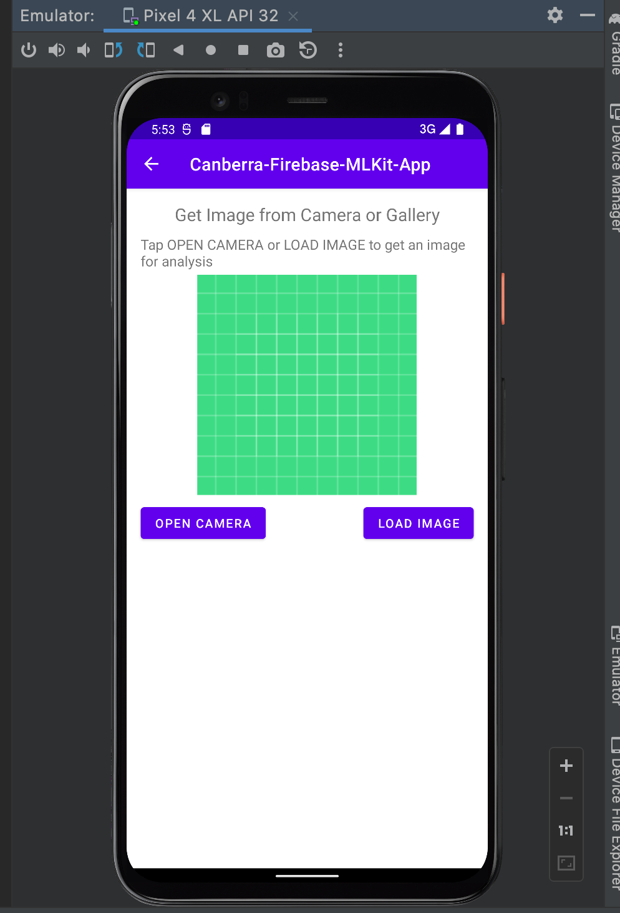
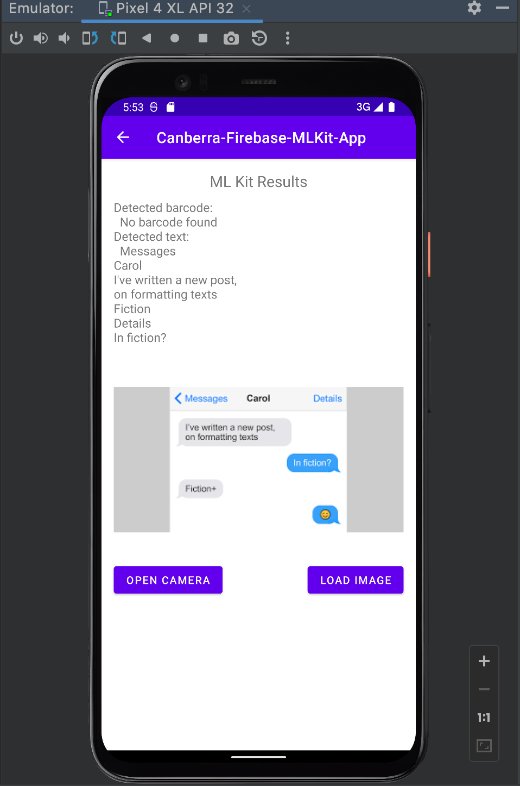

My Work:
I made a recreation of the Canberra Art biennial official website for one of the units I studied in the recent semester, where we pulled the content straight from the official website Canberra Art Biennial I basically added an arty theme to the project and made the content condense into a fewer section or pages.



I felt like there was too much content on the nav bar rigth on the index page which I found was overwhelming to look at, so I made it appear as cards for user to pick as shown below:

AI recognition app
I did this fun project which is basically a text and object recognizer, also for an unit I studied at Uni. We used Android Studio and Java to make this project.


My Study:
I am studying Bachelors of Software Engineering at University of Canberra, and during my study I have learned the following languages displayed below with my confidence in them:
Java : 70%
html : 80%
CSS : 80%
JavaScript : 40%